七、核磁共振波谱法（295题）
一、选择题 ( 共90题 )
1. 2 分 (1073)
萘不完全氢化时，混合产物中有萘、四氢化萘、十氢化萘。附图是混合产物的核磁共
振谱图，A、B、C、D 四组峰面积分别为 46、70、35、168。则混合产物中，萘、四氢化萘，十氢化萘的质量分数分别如下： ( )
(1) 25.4%，39.4%，35.1% (2) 13.8%，43.3%，43.0%
(3) 17.0%，53.3%，30.0% (4) 38.4%，29.1%，32.5%
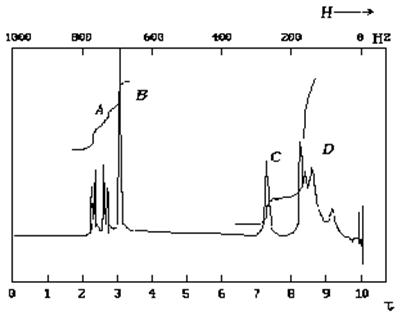
2. 2 分 (1076)
下图是某化合物的部分核磁共振谱。下列基团中，哪一个与该图相符？( )
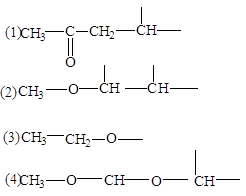
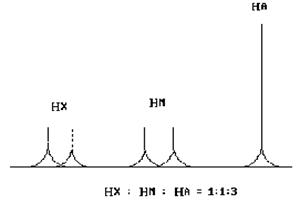
HX：HM：HA=1：2：3
3. 2 分 (1077)
在下面四个结构式中
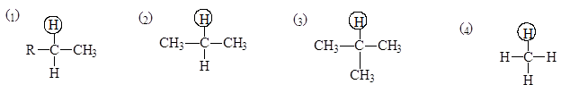
哪个画有圈的质子有最大的屏蔽常数 ？ （ ）
4. 1 分 (1078)
一个化合物经元素分析，含碳 88.2%，含氢 11.8%，其氢谱只有一个单峰。它是
下列可能结构中的哪一个？ ( )
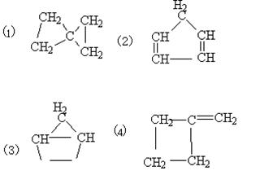
5. 2 分 (1113)
下列化合物中，1H 最大的化学位移值 (��) 是 ( )
(1) CH3F (2) CH3Cl (3) CH3Br (4) CH3I
6. 1 分 (1178)
下述原子核中，自旋量子数不为零的是 ( )
(1) �� F (2) �� C (3) �� O (4) �� He
7. 2 分 (1186)
在 CH3- CH2- CH3分子中，其亚甲基质子峰精细结构的强度比为哪一组数据 ?（ ）
(1) 1 : 3 : 3 : 1 (2) 1 : 4 : 6 : 6 : 4 : 1
(3) 1 : 5 : 10 : 10 : 5 : 1 (4) 1 : 6 : 15 : 20 : 15 : 6 : 1
8. 2 分 (1187)
ClCH2- CH2Cl 分子的核磁共振图在自旋－自旋分裂后，预计 ( )
(1) 质子有 6 个精细结构 (2) 有 2 个质子吸收峰
(3) 不存在裂分 (4) 有 5 个质子吸收峰
9. 2 分 (1188)
在 O - H 体系中，质子受氧核自旋－自旋偶合产生多少个峰 ? ( )
(1) 2 (2) 1 (3) 4 (4) 3
10. 2 分 (1189)
在 (CH3)2CHCH2 - OH 中核磁共振吸收峰面积之比为哪一组数据 ? ( )
(1) 6 : 1 : 2 : 1 (2) 6 : 3 : 1 (3) 3 : 1 : 2 : 1 (4) 6 : 1 : 2
11. 2 分 (1190)
在 CH3CH2Cl 分子中何种质子 s 值大 ? ( )
(1) CH3- 中的 (2) CH2- 中的 (3) 所有的 (4) 离 Cl 原子最近的
12. 2 分 (1191)
在 60 MHz 仪器上，TMS 和一物质分子的某质子的吸收频率差为 120Hz，则该质
子的化学位移为 ( )
(1) 2 (2) 0.5 (3) 2.5 (4) 4
13. 2 分 (1192)
下图四种分子中，带圈质子受的屏蔽作用最大的是 ( )
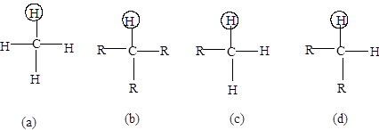
14. 2 分 (1193)
质子的g（磁旋比）为 2.67×108/(T・s)，在外场强度为 B0 = 1.4092Ｔ时,发生核磁共
振的辐射频率应为 ( )
(1) 100MHz (2) 56.4MHz (3) 60MHz (4) 24.3MHz
15. 2 分 (1195)
下述原子核没有自旋角动量的是 ( )
(1) 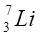 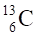 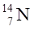 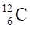
16. 1 分 (1221)
将 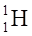
(1) 1 (2) 2 (3) 3 (4) 5
17. 2 分 (1650)
核磁共振波谱法中乙烯, 乙炔, 苯分子中质子化学位移�逯敌蚴� ( )
(1) 苯 > 乙烯 > 乙炔 (2) 乙炔 > 乙烯 > 苯
(3) 乙烯 > 苯 > 乙炔 (4) 三者相等
18. 1 分 (1651)
用核磁共振波谱法测定有机物结构, 试样应是 ( )
(1) 单质 (2) 纯物质 (3) 混合物 (4) 任何试样
19. 2 分 (1652)
在下列化合物中,核磁共振波谱, OH基团的质子化学位移值最大的是 (不考虑
氢键影响) ( )
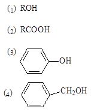
20. 2 分 (1653)
对乙烯与乙炔的核磁共振波谱, 质子化学位移(d )值分别为5.8与2.8, 乙烯
质子峰化学位移值大的原因是 ( )
(1) 诱导效应 (2) 磁各向异性效应 (3) 自旋─自旋偶合 (4) 共轭效应
21. 2 分 (1654)
某化合物分子式为C10H14, 1HNMR谱图如下:
有两个单峰 a峰d= 7.2 , b峰d= 1.3
峰面积之比: a:b=5:9 试问结构式为 ( )
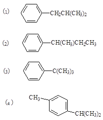
22. 2 分 (1655)
化合物C4H7Br3的1HNMR谱图上,有两组峰都是单峰:
a峰 d= 1.7 , b峰 d= 3.3,
峰面积之比: a:b=3:4 它的结构式是 ( )
(1) CH2Br-CHBr-CHBr-CH3
(2) CBr3-CH2-CH2-CH3
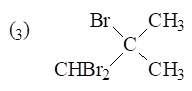
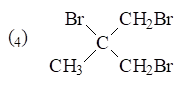
23. 2 分 (1656)
某化合物经元素分析, 含碳88.2%, 含氢11.8%, 1HNMR谱图上只有一个单峰,
它的结构式是 ( )
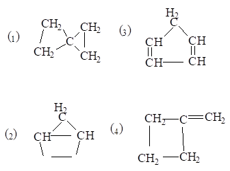
24. 2 分 (1657)
下列化合物的1HNMR谱, 各组峰全是单峰的是 ( )
(1) CH3-OOC-CH2CH3 (2) (CH3)2CH-O-CH(CH3)2
(3) CH3-OOC-CH2-COO-CH3 (4) CH3CH2-OOC-CH2CH2-COO-CH2CH3
25. 2 分 (1658)
丙烷 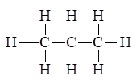
(1) 3:1 (2) 2:3:3 (3) 3:2:3 (4) 3:3:2
26. 2 分 (1659)
核磁共振波谱法, 从广义上说也是吸收光谱法的一种, 但它同通常的吸收光谱法
(如紫外、 可见和红外吸收光谱)不同之处在于 ( )
(1) 必须有一定频率的电磁辐射照射 (2) 试样放在强磁场中
(3) 有信号检测仪 (4) 有记录仪
27. 2 分 (1660)
对核磁共振波谱法, 绕核电子云密度增加, 核所感受到的外磁场强度会( )
(1) 没变化 (2) 减小
(3) 增加 (4) 稍有增加
28. 2 分 (1661)
核磁共振波谱的产生, 是将试样在磁场作用下, 用适宜频率的电磁辐射照射,
使下列哪种粒子吸收能量, 产生能级跃迁而引起的 ( )
(1) 原子 (2) 有磁性的原子核
(3) 有磁性的原子核外电子 (4) 所有原子核
29. 2 分 (1662)
核磁共振的弛豫过程是 ( )
(1) 自旋核加热过程
(2) 自旋核由低能态向高能态的跃迁过程
(3) 自旋核由高能态返回低能态, 多余能量以电磁辐射形式发射出去
(4) 高能态自旋核将多余能量以无辐射途径释放而返回低能态
30. 2 分 (1663)
核磁共振波谱的产生, 是由于在强磁场作用下, 由下列之一产生能级分裂, 吸收
一定频率电磁辐射, 由低能级跃迁至高能级 ( )
(1) 具有磁性的原子 (2) 具有磁性的原子核
(3) 具有磁性的原子核外电子 (4) 具有磁性的原子核内电子
31. 1 分 (1664)
核磁共振波谱法所用电磁辐射区域为 ( )
(1) 远紫外区 (2) X射线区
(3) 微波区 (4) 射频区
32. 2 分 (1665)
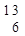
(1) 2 (2) 4 (3) 6 (4) 8
33. 2 分 (1666)
将 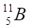
(1) 2 (2) 4 (3) 6 (4) 8
34. 2 分 (1667)
某一个自旋核, 产生核磁共振现象时, 吸收电磁辐射的频率大小取决于（ ）
(1) 试样的纯度 (2) 在自然界的丰度
(3) 试样的存在状态 (4) 外磁场强度大小
35. 2 分 (1668)
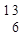
(1)mCB0 (2) 2mCB0 (3) 4mCB0 (4) 6mCB0
36. 2 分 (1669)
自旋核在外磁场作用下, 产生能级分裂, 其相邻两能级能量之差为（ ）
(1) 固定不变 (2) 随外磁场强度变大而变大
(3) 随照射电磁辐射频率加大而变大 (4) 任意变化
37. 2 分 (1670)
化合物C3H5Cl3, 1HNMR谱图上有3组峰的结构式是 ( )
(1) CH3-CH2-CCl3 (2) CH3-CCl2-CH2Cl
(3) CH2Cl-CH2-CH2Cl (4) CH2Cl-CH2-CHCl2
38. 2 分 (1671)
化合物C3H5Cl3, 1HNMR谱图上有两个单峰的结构式是 ( )
(1) CH3-CH2-CCl3 (2) CH3-CCl2-CH2Cl
(3) CH2Cl-CH2-CHCl2 (4) CH2Cl-CHCl-CH2Cl
39. 2 分 (1672)
某化合物的1HNMR谱图上, 出现两个单峰, 峰面积之比(从高场至低场)为3:1
是下列结构式中 ( )
(1) CH3CHBr2 (2) CH2Br-CH2Br
(3) CHBr2-CH2Br (4) CH2Br-CBr(CH3)2
40. 2 分 (1673)
化合物(CH3)2CHCH2CH(CH3)2, 在1HNMR谱图上, 从高场至低场峰面积
之比为 ( )
(1) 6:1:2:1:6 (2) 2:6:2 (3) 6:1:1 (4) 6:6:2:2
41. 2 分 (1674)
化合物Cl-CH2-CH2-Cl1HNMR谱图上为 ( )
(1) 1个单峰 (2) 1个三重峰 (3) 2个二重峰 (4) 2个三重峰
42. 2 分 (1675)
某化合物Cl-CH2-CH2-CH2-Cl1HNMR谱图上为 ( )
(1) 1个单峰 (2) 3个单峰
(3) 2组峰: 1个为单峰, 1个为二重峰 (4) 2组峰: 1个为三重峰, 1个为五重峰
43. 2 分 (1677)
2-丁酮CH3COCH2CH3, 1HNMR谱图上峰面积之比(从高场至低场)应为（ ）
(1) 3:1 (2) 3:3:2 (3) 3:2:3 (4) 2:3:3
44. 2 分 (1716)
在下列化合物中, 用字母标出的亚甲基和次甲基质子的化学位移值从大到小的
顺序是 ( )
CH3CH2CH3 CH3CH(CH3)2 CH3CH2Cl CH3CH2Br
(a) (b) (c) (d)
(1) a b c d (2) a b d c (3) c d a b (4) c d b a
45. 2 分 (1718)
考虑2-丙醇CH3CH(OH)CH3的NMR谱, 若醇质子是快速交换的, 那么下列预言中
正确的是 ( )
(1) 甲基是单峰, 次甲基是七重峰, 醇质子是单峰
(2) 甲基是二重峰, 次甲基是七重峰, 醇质子是单峰
(3） 甲基是四重峰, 次甲基是七重峰, 醇质子是单峰
(4) 甲基是四重峰, 次甲基是十四重峰, 醇质子是二重峰
(假定仪器的分辨率足够)
46. 2 分 (1719)
在下列化合物中, 用字母标出的4种质子的化学位移值(d）从大到小的顺序是（ ）
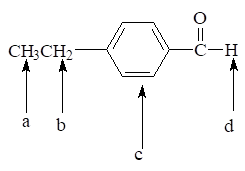
(1) d c b a (2) a b c d
(3) d b c a (4) a d b c
47. 2 分 (1720)
考虑3,3-二氯丙烯(CH2=CH-CHCl2)的NMR谱, 假如多重峰没有重叠且都能分辨,理论
上正确的预言是 ( )
(1) 有3组峰, 2位碳上的质子是六重峰
(2) 有3组峰, 2位碳上的质子是四重峰
(3) 有4组峰, 2位碳上的质子是八重峰
(4) 有4组峰, 2位碳上的质子是六重峰
48. 2 分 (1721)
在核磁共振实验中能够测量到净的吸收, 其原因是 ( )
(1) 处于较低自旋能级的核比较高能级的核稍多, 以及核的自旋-晶格弛豫
(2) 处于较低自旋能级的核比较高能级的核稍多, 以及核的自旋-自旋弛豫
(3) 处于较低自旋能级的核比较高能级的核稍少, 以及核的非辐射弛豫
(4) 处于较低自旋能级的核比较高能级的核稍多, 以及电子的屏蔽
49. 2 分 (1722)
在下列因素中, 不会使NMR谱线变宽的因素是 ( )
(1) 磁场不均匀
(2) 增大射频辐射的功率
(3) 试样的粘度增大
(4) 种种原因使自旋-自旋弛豫(横向弛豫)的速率显著增大
50. 2 分 (1723)
一种纯净的硝基甲苯的NMR图谱中出现了3组峰, 其中一个是单峰, 一组是二重峰,
一组是三重峰. 该化合物是下列结构中的 ( )
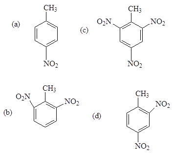
51. 2 分 (1724)
考虑a-呋喃甲酸甲酯(糠醛甲酯)的核磁共振谱, 若仪器的分辨率足够, 下列预言中正
确的是 ( )
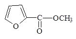
(1) 4个单峰, 峰面积比是1:1:1:3
(2) 4组峰, 其中一个是单峰, 另外3组峰均是二重峰
(3) 4组峰, 其中一个是单峰, 另外3组峰均是四重峰, 多重峰的面积比是1:1:1:1
(4) 4重峰, 同(3), 但多重峰面积比是1:3:3:1
52. 2 分 (1726)
在下列化合物中标出了a、b、c、d 4种质子, 处于最低场的质子是 ( )
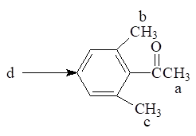
53. 2 分 (1802)
化合物CH3COCH2COOCH2CH3 的1HNMR谱的特点是( )
(1) 4个单峰
(2) 3个单峰, 1个三重峰
(3) 2个单峰
(4) 2个单峰, 1个三重峰和1 个四重峰
54. 2 分 (1803)
化合物CH3CH2OCOCOCH2CH3 的1HNMR谱的特点是( )
(1) 4个单峰 (2) 2个单峰
(3) 2个三重峰, 2个四重峰 (4) 1个三重峰, 1 个四重峰
55. 2 分 (1804)
测定某有机化合物中某质子的化学位移值d在不同的条件下, 其值( )
(1) 磁场强度大的d大
(2) 照射频率大的d大
(3) 磁场强度大, 照射频率也大的d大
(4) 不同仪器的d相同
56. 1 分 (1805)
外磁场强度增大时,质子从低能级跃迁至高能级所需的能量( )
(1) 变大 (2) 变小 (3) 逐渐变小 (4) 不变化
57. 1 分 (1806)
19F, 31P,它们的自旋量子数Ｉ=1/2, 其磁矩m F=2.628 核磁子, mP =1.1305 核磁子,
若照射频率相同, 产生核磁共振信号所需的磁场强度是 ( )
(1) 19F大 (2) 31P大 (3) 两者相同
58. 1 分 (1807)
自旋核的磁旋比γ随外磁场强度变大而( )
(1) 变大 (2) 变小 (3) 稍改变 (4) 不改变
59. 1 分 (1808)
表示原子核磁性大小的是( )
(1) 自旋量子数 (2) 磁量子数 (3) 外磁场强度 (4) 核磁矩
60. 1 分 (1809)
核磁共振波谱法中, 化学位移的产生是由于( )造成的。
(1) 核外电子云的屏蔽作用 (2) 自旋耦合
(3) 自旋裂分 (4) 弛豫过程
61. 2 分 (1810)
NMR法中, 自旋耦合是通过下列哪种情况起作用的( )
(1) 通过自由空间产生的 (2) 通过成键电子传递的
(3) 磁各向异性效应 (4) 共轭效应
62. 1 分 (1811)
氢键的形成使质子的化学位移值δ( )
(1) 变大 (2) 变小 (3) 变大或变小 (4) 不改变
63. 2 分 (1812)
二氟甲烷 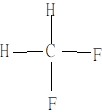
(1) 单峰, 强度比为1 (2) 双峰, 强度比为1:1
(3) 三重峰, 强度比为1:2:1 (4) 四重峰, 强度比为1:3:3:1
64. 2 分 (1813)
CH3CH2OH中,a、b质子的裂分数及强度比分别是( )
(a) (b)
(1) a:五重峰, 强度比为1:4:6:4:1 b:四重峰, 强度比为1:3:3:1
(2) a:三重峰, 强度比为1:2:1 b:四重峰, 强度比为1:3:3:1
(3) a:二重峰, 强度比为1:1 b:三重峰, 强度比为1:2:1
(4) a:单峰, 强度为1 b:单峰, 强度为1
65. 2 分 (1814)
化合物C6H5CH2C(CH3)3 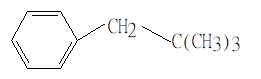
(1) 3组峰: 1个单峰, 1个多重峰, 1个三重峰
(2) 3个单峰
(3) 4组峰: 1个单峰, 2个多重峰, 1个三重峰
(4) 5个单峰
66. 2 分 (1815)
自旋核7Li、11B、75As, 它们有相同的自旋量子数Ι=3/2, 磁矩μ单位为核磁子, mLi =3.2560, mB=2.6880, mAs =1.4349 相同频率射频照射, 所需的磁场强度H大小顺序为( )
(1) BLi>BB>BAs (2) BAs>BB>BLi
(3) BB>BLi>BAs (4) BLi>BAs>BLi
67. 2 分 (1816)
自旋核7Li、11B、75As, 它们有相同的自旋量子数Ι=3/2, 磁矩μ单位为核磁子, mLi =3.2560, mB=2.6880, mAs =1.4349 相同频率射频照射, 所需的磁场强度H大小顺序为( )
(1) BLi>BB>BAs (2) BAs>BB>BLi
(3) BB>BLi>BAs (4) BLi>BAs>BLi
68. 2 分 (1817)
化合物CHCl2CH2CCl3在1HNMR谱图上出现的数据是 ( )
(b) (a)
(1) 2组单峰
(2) 3组单峰
(3) 2组峰:a三重峰,高场;b三重峰,较低场
(4) 2组峰:a二重峰,高场;b三重峰,较低场
69. 2 分 (1818)
化合物(CH3)3CCH2CH(CH3)2有几种类型的质子 ( )
(1) 7 (2) 6 (3) 5 (4) 4
70. 2 分 (1819)
化合物CH3CH2CH2CH2CH3 ,有几种化学等价的质子 ( )
(1) 5 (2) 4 (3) 3 (4) 12
71. 2 分 (1820)
共轭效应使质子的化学位移值δ ( )
(1) 不改变 (2) 变大 (3) 变小 (4) 变大或变小
72. 2 分 (1821)
磁各向异性效应使质子的化学位移值δ ( )
(1) 不改变 (2) 变大 (3) 变小 (4) 变大或变小
73. 2 分 (1822)
磁各向异性效应是通过下列哪一个因素起作用的? ( )
(1) 空间感应磁场 (2) 成键电子的传递
(3) 自旋偶合 (4) 氢键
74. 1 分 (1823)
耦合常数因外磁场的变大而 ( )
(1) 变大 (2) 变小 (3) 略变大 (4) 不改变
75. 1 分 (1824)
核磁矩的产生是由于 ( )
(1) 核外电子绕核运动 (2) 原子核的自旋
(3) 外磁场的作用 (4) 核外电子云的屏蔽作用
76. 1 分 (1825)
测定某化合物的1HNMR谱,可以采用的溶剂是 ( )
(1) 苯 (2) 水 (3) 四氯化碳 (4) 三氯甲烷
77. 2 分 (1826)
请按序排列下列化合物中划线部分的氢在NMR中化学位移值的大小 ( )
A. CH3OCH3 B.ClCH2C≡CH C.(CH3)3N D.(CH3)4C
(1) a>b>c>d (2) b>a>c>d (3) c>a>b>d (4) b>c>a>d
78. 2 分 (1827)
请分析下列化合物中不同类型氢的耦合常数大小,并依次排列成序 ( )
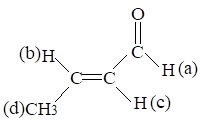
(1) jac> jbc> jcd> jbd (2) jc > jac> jcd> jbd (3) jb > jac> jbd> jcd (4) jac> jbc> jbd> jcd
79. 2 分 (1828)
请按序排列下列化合物中划线部分的氢在NMR中化学位移值的大小 ( )
a. 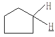
(1) b>c>d>a (2) c>b>a>d (3) c>b>d>a (4) b>c>a>d
80. 1 分 (1829)
下列原子核没有自旋角动量的是 ( )
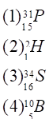
81. 1 分 (1830)
下列是原子质量数与原子序数的几种组合,使原子核的自旋角动量为零的组合是( )
(1) 奇数, 奇数 (2) 奇数, 偶数 (3) 偶数, 奇数 (4) 偶数, 偶数
82. 1 分 (1831)
外磁场强度增大时,质子从低能级跃迁至高能级所需的能量 ( )
(1) 变大 (2) 变小 (3) 不变化 (4) 不确定
83. 1 分 (1832)
当核从低能级跃至高能级时, 核的自旋状态是由 ( )
(1) 顺磁场到反磁场方向 (2) 反磁场到顺磁场方向
(3) 一半顺磁场, 一半反磁场 (4) 自旋状态不改变
84. 1 分 (1833)
把 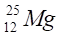
(1) 3 (2) 4 (3) 5 (4) 6
85. 1 分 (1834)
三个不同的质子A, B, C, 其屏蔽常数的次序为:s B>s A>s C, 当这三个质子在共振时,
所需外磁场B0的次序是 ( )
(1) B 0(B)>
B 0(A)> B 0(C)
(2) B 0(A)> B 0(C)>
B 0(B)
(3) B 0(C)> B 0(A)>
B 0(B)
(4) B 0(B)> B 0(C)>
B 0(A)
86. 1 分 (1835)
三个质子在共振时, 所需的外磁场强度B 0的大小次序为B 0(A)> B 0(B)> B 0(C) 相对于TMS, 该三个质子的化学位移的次序为 ( )
(1)dA>dB>dC (2) dB>dC>dA (3) dB>dA>dC (4) dC>dB>dA
87. 1 分 (1836)
当质子和参比质子的屏蔽常数的差值增加时, 化学位移值将 ( )
(1) 不变 (2) 减小 (3) 增加 (4) 不确定
88. 1 分 (1837)
当质子共振所需的外磁场B0增加时, d值将 ( )
(1) 增加 (2) 减小 (3) 不变 (4) 先增加后减小
89. 2 分 (1838)
使用60.0MHz的仪器, TMS吸收和化合物中某质子之间的频率差为180Hz。若使用
40.0MHz的仪器, 则它们之间的频率差是( )
(1) 100Hz (2) 120Hz (3) 160Hz (4) 180Hz
90. 2 分 (2089)
弛豫过程有两种: _____________________和____________________________.
二、填空题 ( 共88题 )
1. 2 分 (2489)
核磁共振波谱中的弛豫过程所发生的能量交换有
和 两过程。
2. 2 分 (2050)
写出下述化合物质子出现的多重峰数目，并标出其高低场次序
HOCH2CH2CN
( ) ( ) ( )
( ) ( ) ( )
3. 2 分 (2056)
核磁共振的弛豫过程是指 ___________________________________ 的那种过程。
4. 2 分 (2058)
核磁共振的化学位移是由于 _______________________________________ 而造成的，
化学位移值是以 _________________________________为相对标准制定出来的。
5. 2 分 (2096)
当外加磁场强度B0增加时,对质子来说,由低能级向高能级跃迁时所需能量________.
6. 2 分 (2101)
在核磁共振实验中,将试样管转动的目的是使_____________________.
7. 2 分 (2102)
核磁共振法中,测定某一质子的化学位移时,常用的参比物质是________________.
8. 2 分 (2106)
质子吸收峰的屏蔽效应大小可用___________________来表示.
9. 2 分 (2107)
已知氟核的m=2.6273, 氢核的m=2.7927, 如果在辐射频率不变的情况下发生共振,
则氟原子核所需的外磁场强度一定比氢核所需的
10. 5 分 (2488)
核磁共振波谱的一级谱图必须符合的条件是 据一级谱图的特性,
判断化合物CH3-O-CH2-CH2Cl在NMR谱图上会出现 组质子峰, 各组峰分裂的
数目为 其积分面积比为
11. 2 分 (2490)
核磁共振波谱法中R-CHO醛基质子化学位移d值(约为7.8～10.5) 比较大,原因为
。
12. 5 分 (2491)
核磁共振波谱法, 自旋-自旋偶合是指_________________ , 自旋-自旋裂分是指
。
13. 2 分 (2493)
13CNMR谱法中, 由于13C核与_______________核自旋偶合, 使13C核谱线由多重峰变为简化图谱, 多采用_________________技术.
14. 2 分 (2495)
核磁共振波谱法中, 将卤代甲烷: CH3F, CH3Cl, CH3Br, CH3I 质子的d值按 逐渐减小的
顺序排列如下 。
15. 2 分 (2496)
核磁共振波谱法, 是由于试样在强磁场作用下, 用适宜频率的电磁辐射照射, 使
吸收能量, 发生能级跃迁而产生的。
16. 5 分 (2497)
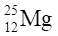
17. 5 分 (2498)
乙酸特丁酯 (CH3)3C-OOC-CH3 1HNMR谱图:
有________________________种类型质子, 各有______________________重峰，(从高场至低场), 峰面积之比(从高场至低场)为________________________.
18. 5 分 (2499)
丙酮1HNMR谱图应为 , 原因是_________________.
19. 2 分 (2500)
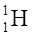
为____________________________.
20. 2 分 (2501)
对核磁共振波谱法, 电磁辐射在____________________________区域, 波长大约在______________________ , 频率约为_____________________ 数量级
21. 2 分 (2502)
核磁共振波谱仪提供磁场的元件有_____________________________________,
___________________________和_______________________________.
22. 2 分 (2503)
13CNMR化学位移d值范围约为 _______________________________ .
1HNMR化学位移d值范围约为________________________________ .
23. 2 分 (2504)
核磁共振波谱中, 乙烯与乙炔, 质子信号出现在低场的是
.
24. 5 分 (2528)
在2.349T磁场中 1H的核磁共振频率是100MHz.设有A、B两种质子, 相对于TMS的
化学位移分别是��d(A)=3.0, ��d(B)=6.0, TMS的质子全称C质子.
(1) 这三种质子的屏蔽常数从小到大的顺序是________________________________.
(2) 若固定100MHz射频, 扫描磁场, A质子的共振吸收场强比B质子______________T.
(3) 若固定2.349T磁场, 扫描射频频率, 则A质子的共振吸收频率比B质子_____Hz.
25. 5 分 (2530)
在0.7046T的磁场中孤立质子的共振吸收频率是30MHz. 以TMS为参比, A、B两组质子的化学位移分别是��d (A)=1.0,��d (B)=3.0,偶合常数J(A-B)=5Hz,在0.7046T磁场中A、B两组峰的中心距离是________Hz或________T. 若在2.3488T的磁场中测量, 这两组峰的中心距离是_______Hz, 相邻的分裂峰间的距离是_________Hz.
26. 5 分 (2531)
1H 的核磁矩是2.7927核磁子, 11B的核磁矩是2.6880核磁子, 核自旋量子数为3/2，在
1.000T 磁场中, 1H 的NMR吸收频率是________MHz, 11B的自旋能级分裂为_______个, 吸
收频率是________MHz
(1核磁子=5.051×10-27J/T, h=6.626×10-34J・s)
27. 5 分 (2705)
1H NMR较复杂的图谱简化方法有:________________、_______________、
________________、_________________、_______________。
28. 2 分 (2706)
连续波核磁共振波谱仪的探头装置主要组成为_________、_______和_______。
29. 2 分 (2707)
NMR法中,13C谱不能用_____________波谱仪进行测定, 必须用_________________ 波谱仪进行测定。
30. 2 分 (2709)
脉冲傅里叶变换核磁共振波谱仪与连续波核磁共振波谱仪相比,其主要优点为
____________________________________和_____________________________。
31. 5 分 (2710)
傅里叶变换核磁共振波谱仪射频源为_______________,它是_____频带的, 收集到的信号为_____________________,图形为____________, 经过_______________得到常规波谱图。
32. 2 分 (2711)
NMR法中,质子的化学位移值δ因诱导效应而________________; 因共轭效应而________; 因磁各向异性效应而______________。
33. 2 分 (2712)
NMR法中,对谱线宽度影响大的因素是_____________。
34. 2 分 (2713)
苯上6个质子是_________等价的，同时也是__________等价的 。
35. 5 分 (2714)
磁场强度为1.4092T,1H的共振频率为60MHZ,与1H有相同自旋量子数(I=1/2)的13C、 19F、31P (磁矩m单位为核磁子, mH=2.793, mC=0.7023, mF=2.628, mP=1.1305)它们在相同的磁场强度下, 共振频率13C为________，19F为_________，31P为____________。
36. 5 分 (2715)
某质子由于受到核外电子云的屏蔽作用大, 其屏蔽常数σ_______, 其实际受到作用的 磁场强度_________, 若固定照射频率, 质子的共振信号出现在_______场区,化学位移值δ____, 谱图上该质子峰与TMS峰的距离_________。
37. 5 分 (2716)
1HNMR谱图上, 60MHZ波谱仪,某化合物甲基质子的峰距TMS峰134HZ,亚甲基质子的 距离为240 HZ,若用100MHZ波谱仪, 甲基质子的峰距TMS峰为____________，亚甲基为 ______________。
38. 5 分 (2717)
请列出1HNMR法中常用的有机溶剂为____________、
_______________、______________, 水溶液常用的溶剂为________________。
39. 2 分 (2708)
核磁共振波谱仪中场频连锁的作用是 ___________________________________。
40. 2 分 (2718)
某自旋核在强磁场中自旋轴有8种取向,其自旋量子数I为____,其磁量子数m为___ 。
41. 2 分 (2719)
核磁共振波谱仪中磁铁的作用是______________________________________,
射频发生器的作用是______________________________________________。
42. 2 分 (2720)
自旋耦合与自旋裂分的区别是________________________________________。
43. 2 分 (2721)
用固定频率的电磁辐射作用于1H,19F,13C和31P核, 若要使它们发生共振跃迁, 所需外磁场强度B从大到小的顺序是__________________( mH=2.793, mF=2.628, mC=0.7023, mP=1.1305,自旋量子数都为1/2)。
44. 5 分 (2722)
NMR法中影响质子化学位移值的因素有：__________，___________，__________
， ， 。
45. 5 分 (2723)
核磁共振现象是___________的原子核, 在__________中, 产生___________, 吸收___________________________, 产生____________。
46. 5 分 (2724)
1HNMR法中常用四甲基硅烷Si(CH3)4(TMS)作为测定质子化学位移时用的 参比物质,其优点:________________________,________________________,
_________________,______________________。
47. 2 分 (2725)
请指出下列原子核中:1H、2H、12C、13C、14N、16O、17O，在适当条件下能产生
NMR信号的有_________。
48. 2 分 (2726)
自旋量子数I=0原子核的特点是__________________________________________。
49. 2 分 (2727)
核磁距是由于_______________而产生的,它与外磁场强度_________。
50. 5 分 (2728)
苯、乙烯、乙炔、甲醛,其1H化学位移值d最大的是_______最小的是_________,13C的 d值最大的是_________最小的是____________。
51. 5 分 (2729)
1HNMR谱图中,苯环质子d=7.8,该质子峰距TMS峰间距离为1560HZ,所使用仪器的照射频率为_______,若使用仪器的照射频率为90MHZ,其与TMS峰之间距离为_____。
52. 5 分 (2730)
质子在一定条件下产生核磁共振,随磁场强度B0的增大,共振频率υ会___________, 核磁距m会__________,高低能级能量差DE会____________,其低能级m=_______的 核的数目在温度不变的情况下会__________。
53. 5 分 (2731)
氢核的自旋量子数I=1/2,其自旋轴在外磁场中有____种取向,其磁能级m各为_________
当氢核吸收了适当的射频能量,由m为______能级跃迁到m为_______能级。
54. 2 分 (2732)
化合物分子式为C3H5Cl 3在1HNMR谱图上出现两个单峰,其峰面积之比为3:2, 其结构式为____________。
55. 2 分 (2733)
NMR法中化学等价的核_________是磁等价的, 磁等价的核_______ 是化学等价的。
56. 2 分 (2734)
自旋核1H、13C、31P、19F,它们的自旋量子数相同I=1/2,在相同的磁场强度作用下,自旋核 产生能级分裂,其高低能级之间能量差____最大,_____最小(磁距大小mH>mF.> mP>mC)。
57. 5 分 (2735)
化合物C6H12O,其红外光谱在1720cm-1附近有1个强吸收峰，1HNMR谱图上, 有两组单峰da=0.9, db=2.1,峰面积之比a:b =3:1, a为_______基团, b为_________基团, 其结构式是__________________。
58. 5 分 (2735)
化合物C6H12O,其红外光谱在1720cm-1附近有1个强吸收峰，1HNMR谱图上, 有两组单峰da=0.9, db=2.1,峰面积之比a:b =3:1, a为_______基团, b为_________基团, 其结构式是__________________。
59. 2 分 (2737)
化合物CH3(a)CH2(b)Br中, a,b两种质子峰的裂分数和强度之比是_______ _________。
60. 5 分 (2738)
化合物C10H14有五种异构体:
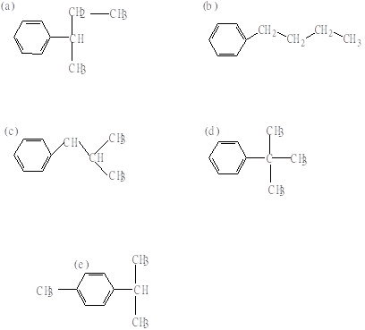
在1HNMR谱图上:
1.有两组单峰的是____
2.有四组峰的是_______
3.有五组峰的是_______。
61. 2 分 (2739)
化合物C4H8O2的三种异构体为:
( a )乙酸乙酯 CH3COOCH2CH3
( b )丙酸甲酯CH3CH2COOCH3
( c )丁酸CH3CH2CH2COOH
三者的1HNMR谱图中都有一个单峰, 在同一仪器相同条件下测定这三个单峰化学位移值δ的大小顺序为______________。
62. 2 分 (2740)
若分子中有CH3CH2-基团，1HNMR图谱的特征为______________________________
。
63. 5 分 (2741)
乙苯 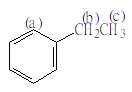
峰的裂分情况为_______________________________________
化学位移值大小(或信号在高低场)为_____________________
峰面积之比为________________。
64. 5 分 (2742)
化合物C12H14O2,在其1HNMR谱图上有下列数据:
(1)3组峰a,b,c
(2)da=7.69为峰形复杂邻位二取代苯的峰
db=4.43,四重峰
dc=1.37,三重峰
(3)峰面积之比为a:b:c=2：2：3，其结构式为_______________。
65. 5 分 (2743)
1HNMR谱图中可得到如下的信息:
吸收峰的组数说明________________________________;
化学位移值说明__________________________________;
峰的分裂个数与耦合常数说明_______________________;
阶梯式积分曲线高度说明_______________________。
66. 5 分 (2744)
CH3Cl、CH4、CH2Cl2、CHCl3中质子,屏蔽常数s最大的是______, 最小的是_________,化学位移值d最大的是________,最小的是__________, 共振信号出现在最低场的是________。
67. 5 分 (2745)
化合物C7H16O3,1HNMR谱图有如下数据:有三种类型质子
(a) d =1.1,三重峰,9 个质子
(b)d =3.7,四重峰,6个质子
(c) d =5.3,单峰,1个质子
其中,a为_______________基团, b为_______________基团,c为_______________基团,
它的结构式为_____________________________________________。
68. 2 分 (2746)
化合物C2H3Cl3在1HNMR谱图上,在δ=2.7处只有一个单峰,它的结构式为______________。
69. 5 分 (2747)
核磁共振波谱法中,三个不同质子a 、b、c、其屏蔽常数的大小顺序为s b>s a>s c.请问 它们化学位移值大小顺序为_______共振时所需外加磁场强度大小顺序为__________。
70. 2 分 (2748)
化合物(a )、(b)、(c)结构如下:
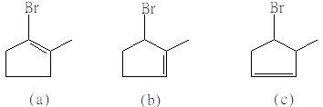
这三个异构体1HNMR谱的区别是________________________________________。
71. 2 分 (2749)
丙酮甲基上质子的化学位移值为2.1, 试问当以TMS为标准物质时60MHZ的仪器而言 频率差为________HZ。
72. 2 分 (2750)
在丙酮分子中甲基上分子的化学位移为2.1, 试问当以TMS为标准物质时, 对100MHZ的仪器而言, 频率差为_____HZ。
73. 2 分 (2751)
在丙酮分子中甲基上分子的化学位移为2.1, 试问当以TMS为标准物质时, 对500MHZ的仪器而言, 频率差为_____HZ。
74. 2 分 (2752)
在下列各部分结构中按1HNMR化学位移值d减小的顺序排列之:
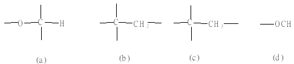
_____________________________________________。
75. 2 分 (2753)
请按次序排列苯环上相邻氢的耦合常数大小_____________________。
76. 2 分 (2754)
在下列各部分结构中按1HNMR化学位移值减小的次序来排列
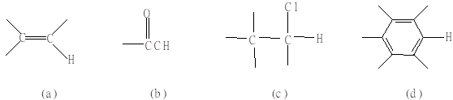
______________________________________。
77. 2 分 (2755)
请以图解法表示化合物 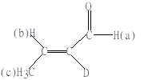
和峰的裂分数________________________________
。
78. 2 分 (2756)
请以图解法表示化合物CH3(a)CD2CO2CH3(b)各种氢的化学位移值的大小和峰的裂分数_________________________ 。
79. 2 分 (2757)
请以图解法表示化合物CH2(a)DCH(b)Cl2各种氢的化学位移值的大小和峰的裂分数_____________________________ 。
80. 2 分 (2758)
请以图解法表示化合物CH3(a)CD2CH3(b)各种氢的化学位移值的大小和峰的裂分数_____________________________ 。
81. 2 分 (2759)
请以图解法表示化合物CH3(a)CH(b)DCH3(c)各种氢的化学位移值的大小和峰的裂分数___________________________ 。
82. 2 分 (2760)
在HF 分子中,若F的自旋为1/2,那么质子所受的磁场比外磁场将_________, 由此,引起质子共振所需的外磁场将____________。
83. 2 分 (2761)
在HF 分子中,H和F均有磁矩,氟的自旋量子数I =1/2,相对于外磁场,则 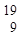
84. 2 分 (2762)
自旋-自旋耦合常数J是指______________________, J值的大小取决于_______ _________,当外磁场强度改变时, J值________。
85. 2 分 (2763)
在60MHZ仪器上和在300MHZ的仪器上测定同一化合物的 质子的共振谱,相对于TMS, 两仪器上测得的化学位移d是_________,该质子与TMS的频率差在两仪器上是_______。
86. 2 分 (2764)
在乙醇CH3CH2OH分子中,三种化学环境不同的质子,其屏蔽常数s的大小顺序是_______,其共振频率υ的顺序是___________________, 化学位移d的大小顺序是___________。
87. 5 分 (4519)
在核磁共振波谱分析实验中, 试样管旋转的作用是______________________________。
仪器的分辨率已调整合适的标志是_____________________________________________。
88. 2 分 (4521)
在核磁共振波谱法中, 记录纸上横坐标自左向右对应于扫描磁场由_____变_____, 故称横坐标左端为________场, 右端为________场。
三、计算题 ( 共29题 )
1. 5 分 (2492)
核磁共振波谱仪测定氢谱, 仪器为2.4T与100MHz, 请计算扫频时的频率变化范围 及扫场时的磁场强度变化范围.
2. 10 分 (3078)
（1）.在核磁共振波谱法中，常用 TMS(四甲基硅烷) 作内标来确定化学位移，这样做有什么好处？
（2）1,2,2-三氯乙烷的核磁共振谱有两个峰。用 60MHz 仪器测量时，＝CH2质子的吸收峰与 TMS 吸收峰相隔 134Hz，≡CH 质子的吸收峰与 TMS 吸收峰相隔 240Hz。试计算这两种质子的化学位移值，若改用 100MHz 仪器测试，这两个峰与 TMS 分别相隔多少？
3. 5 分 (3097)
使用 60.00MHz 核磁共振仪，化合物中某质子和 TMS(四甲基硅烷)之间的频率差为 120Hz，试计算其化学位移值 。
4. 5 分 (3131)
液态乙酰丙酮的核磁共振谱中有一个在5.62处（积分器为 19.5单位）的峰，一个在d 3.33处（37.0单位）的峰，加上其它与本题无关的峰。试计算其烯醇成分的质量分数。
5. 10 分 (3140)
今用一 100 MHz 质子核磁共振波谱仪来测定 13C 的核磁共振谱，若磁场强度(2.35T)不变，应使用的共振频率为多少？若在后者共振频率条件下，要测定31P的核磁共振谱，磁场需要调整到多少？
(1H 的磁矩为 2.79268 核磁子；13C 的磁矩为 0.70220 核磁子;31P 的磁矩为 1.1305 核磁子。)
6. 10 分 (3373)
某有机化合物相对分子质量为88, 元素分析结果其质量组成为: C: 54.5%; O: 36;H: 9.1% NMR谱图表明:
a组峰是三重峰, d≈1.2, 相对面积=3;
b组峰是四重峰, d≈2.3, 相对面积=2;
c组峰是单重峰, d≈3.6, 相对面积=3;
(1) 试求该化合物各元素组成比
(2) 确定该化合物的最可能结构及说明各组峰所对应基团
7. 5 分 (3374)
在同一磁场强度作用下, 13C核与1H核相邻两能级能量之差(DE)之比为多少?
(mH=2.793核磁子,mC=0.702核磁子)
8. 5 分 (3375)
1H在2.4 T 磁场作用下, 产生核磁共振吸收频率为1.0×108MHz.14N(I=1)在此情况下产生核磁共振现象, 其吸收频率为多少? (1H的磁矩mH 为2.793核磁子,14N的磁矩mC 为0.404核磁子)
9. 5 分 (3376)
1H在1.4 T 的磁场作用下, 60.0MHz电磁辐射照射, 产生核磁共振现象, 27Al在相同磁场条件下, 共振时, 须15.6MHz的电磁辐射。问27Al的磁矩m (Al)为多少核磁子?
(mH=2.793核磁子)
10. 5 分 (3377)
使用60.0MHz仪器, TMS吸收峰和化合物中某质子之间频率差为240Hz, 如果使用100MHz仪器, 它们之间的频率差为多少?
11. 5 分 (3378)
当采用90MHz频率照射时, TMS和化合物中某质子之间的频率差为430Hz, 这个质子 吸收的化学位移是多少?
12. 5 分 (3379)
质子1H磁矩mH为1.41×10-12J/T, 在2.4T磁场作用下产生核磁共振,问其吸收的电磁辐射频率是多少?
13. 10 分 (3406)
在60MHz(1.409T)的核磁共振谱仪中, 采用扫频工作方式, A质子和B质子的共振频率分别比TMS高360Hz和低120Hz.
(1) 由于电子的屏蔽, A质子所受的实际场强(有效场强)比B质子高还是低? 相差多少?
(2) 若人为规定TMS的屏蔽常数为零, A和B的屏蔽常数各为多少?
14. 5 分 (3538)
防落素（对氯苯氧乙酸）是一种植物生长刺激素，一般合成物有两种异构体：
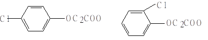
对位（p） 邻位（o）
其中有效成分是对位异构体。从某批合成产物的1HNMR谱图中得到如下数据：
d＝4.75和d＝4.88为两个化合物中 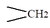
15. 5 分 (3539)
甲苯和苯的混合物的1HNMR谱图上有两个信号，一个在d＝7.3（积分值为85）另一 个在d＝2.2( 积分值为15)处。请计算混合物中苯和甲苯的比例。
16. 5 分 (3540)
1H在2.349T磁场作用下，其共振频率为100Hz，产生1HNMR信号。45Sc在相同磁场条件下，共振频率为24.29MHz，问45Sc的自旋量子数为多少？（mH＝2.793核磁子， mSc＝4.749核磁子）
17. 5 分 (3541)
计算13C核的磁旋比γ（磁矩mC＝0.7023核磁子，1核磁子＝5.05×10-27J・T－1，h=6.63×10-34J・s）。
18. 5 分 (3542)
13C在外磁场中，磁场强度为2.3487T，用25.10MHz射频照射，产生核磁共振信号， 问13C的核磁矩为多少核磁子？（1核磁子单位＝5.05×10-27J・T－1， h=6.63×10-34J・s）
19. 5 分 (3543)
某化合物中甲基质子在60 Hz的谱仪上化学位移d＝2.7，在100MHz的谱仪上化学 位移为多少？两者与TMS之间频率差为多少？
20. 5 分 (3544)
某化合物中苯基上的质子化学位移值 δ＝7.4，所使 用的NMR波谱仪为90MHz求：
（1）苯基上质子距TMS的距离。
（2）该化合物中另一个亚甲基质子在同样条件下测得质子峰与TMS峰的距离为171，
求化学位移d。
21. 5 分 (3545)
自旋核1H、14N、27Al、75As在相同强度的外磁场中，它们相邻两能级能量差△E由大到小的顺序是什么？为什么？自旋量子数Ι：ΙH＝1/2，ΙN＝1，ΙAl=5/2, ΙAs=3/2；核磁矩m（单位:核磁子）：mH＝2.793，mN＝0.4073，mAl=3.6385， mAs=1.4349
22. 10 分 (3546)
磁场强度为2.34T，1H的共振频率为多少？若使用磁场强度为2.34T，测定13C的NMR 谱时共振频率为25.1MHz，若使用80MHz仪器来测定13C谱，其共振频率是多少？
（mH＝2.793核磁子，1核磁子＝5.05×10-27J・T－1，h=6.63×10-34J・s）
23. 10 分 (3547)
13C若在1.4092T的磁场中，需用15.08MHz的射频作用测定13C－NMR 谱，若用 60MHz的射频测定13C－NMR 谱，所需磁场强度为多大？若用60MHz射频测定 19F－NMR谱问磁场强度为多大？（mC＝0.7023核磁子，mF＝2.6286，13C、19F的自旋量子数都为1/2）
24. 2 分 (3548)
31P核在磁场强度为1.4092T的磁场作用下，用24.29MHz射频照射，产生核磁共振信 号，问其自旋量子数为多少？
（磁矩mP＝1.1305核磁子，1核磁子＝5.05×10-27J・T－1，h=6.63×10-34J・s）
25. 2 分 (3549)
自旋核43Ca自旋量子数I＝7/2，在外磁场作用下它有多少个能态？其磁量子数m各为 多少？
26. 2 分 (3550)
在使用200MHz的NMR波谱仪中某试样中的质子化学位移值为6.8，试计算在300MHz 的NMR仪中同一质子产生的信号所在位置为多少Hz？
27. 5 分 (3551)
磁场强度为1.4092T，求质子两个能级能量之差，在相同条件下1H与13C两能级能量 差之比为多少？
（mH＝2.793核磁子，mC＝0.7023核磁子，1核磁子＝5.05×10-27J・T－1）
28. 5 分 (3552)
在同一磁场强度下1H与14N核相邻两能级能量差之比为多少？
（mH＝2.793核磁子，mN＝0.4073核磁子，IH=1/2,IN=1）
29. 2 分 (3553)
自旋核11B其磁旋比γ＝0.8583×108T－1・s－1，在64.167MHz射频下产生NMR信号，问其磁场强度需多大？
四、问答题 ( 共 88题)
1. 5 分 (2494)
13CNMR谱法, 为什么必须采用脉冲傅里叶变换核磁共振谱仪?
2. 5 分 (4016)
C4H8Br2 的核磁共振谱峰数如下：
d1 = 1.7 ，双峰
d2 = 2.3 , 四重峰
d3 = 3.5 ，三重峰
d4 = 4.3 ，六重峰
这四种峰的面积比依次为 3 : 2 : 2 : 1 .
试写出该化合物的结构式，并用数字 1、2、3、4 标明相应的碳原子, 并作简明解释。
3. 5 分 (4017)
1,1,2-三氯乙烷 的低分辨氢核磁共振谱在d1= 3.95 及 d2＝ 5.77 处出现两个峰（峰1,
峰2）。
(1) 试估计这两个峰的面积比为多少？
(2) 若改用高分辨仪器，得到的核磁共振谱将会出现几个峰？位于何处？
4. 5 分 (4031)
化合物环戊烷 的核磁共振谱图中，各峰的面积比为多少？
5. 5 分 (4043)
已知自旋量子数 I = 1/2 的氢核磁矩为 2.79，磷核磁矩为 1.13，氟核磁矩为 2.63。
当它们在磁场强度相同的磁场中时，若要使它们发生共振，哪一种核需要最大的照射频率
哪一种核需要最小的照射频率？说明原因。
6. 10 分 (4047)
某化学式为 C3H3Cl5 的化合物，其 NMR 谱图如下，试写出它的结构式并指明
与谱图对应的质子峰的归属。（如图）
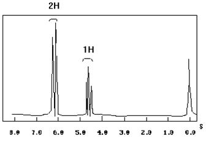
7. 10 分 (4048)
有一化学式为 C3H7O2N 的化合物。其 NMR 谱图如下，试推测它的结构，并在谱图上指明质子峰的归属（如图）。
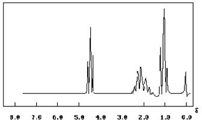
8. 5 分 (4050)
根据 HOCH2CH2CN 的氢谱。指出各信号的归属，并画出偶合裂分线图（如图）。
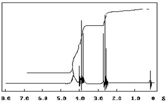
9. 5 分 (4077)
根据 CH3- CH2- O - CHCl - CH3的氢谱，指出各信号的归属，并画出偶合裂分线图(如图)。
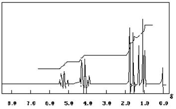
10. 5 分 (4103)
��H、��F、��C 核的核磁矩分别为 2.79、2.63、0.70,当它们在磁场强度相同的磁场中时，哪一种磁核的共振频率最大？为什么？
11. 5 分 (4126)
核磁共振波谱的化学位移是怎样产生的？
12. 5 分 (4127)
判断以下化合物的 NMR 谱图（氢谱）。
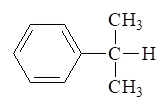
13. 5 分 (4129)
判断下列化合物的核磁共振谱图（氢谱）。
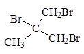
14. 5 分 (4141)
分别画出 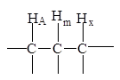
15. 5 分 (4400)
连续波核磁共振波谱仪由哪几部分组成? 并简要说明它们各自的作用.
16. 5 分 (4401)
说明核磁共振波谱是怎样产生的?
17. 5 分 (4402)
化合物C9H10O21H谱图如下:
(1) 3组峰
(2) a. d=1.98 单峰 3个质子 请写出它的结构式, 并解释其理由.
b. d=5.00 单峰 2个质子
c. d=7.29 单峰 5个质子
18. 5 分 (4403)
化合物C7H8O 1H-NMR谱图如下:
(1) 有三组峰
(2) a. d =3.8, 单峰, 1个质子 请写出结构式, 并解释其理由.
b. d=4.6, 单峰, 2个质子
c. d=7.2 单峰 5个质子
19. 5 分 (4404)
顺-丁烯二酸二乙酯 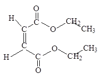
(1) 有几种类型质子
(2) 化学位移值大小(或高场, 低场)
(3) 裂分图
(4) 质子数之比
20. 5 分 (4405)
化合物C3H6O21H-NMR谱图如下
(1) 有3种类型质子
(2) a. d=1.2 三重峰
b. d=2.4 四重峰
c. d=10.2 单峰
(3) 峰面积之比 a:b:c =3:2:1
请写出它的结构式, 并解释原因.
21. 5 分 (4406)
化合物C7H81H-NMR谱图如下:
有两组峰
a. d=2.3 单峰
b. d=7.2 单峰
峰面积之比 a:b =3:5
请写出它的结构式
22. 5 分 (4407)
判断化合物◇=CH2的1H-NMR谱图, 请写出各峰的化学位移大小 (或高、低场), 裂分图与峰面积之比 .
23. 5 分 (4408)
判断乙醛CH3CHO的1H-NMR谱图, 请说明各峰的化学位移大小(或高、低场), 裂分图与峰面积之比 .
24. 5 分 (4409)
13C-NMR与1H-NMR波谱法比较, 对测定有机化合物结构有哪些优点?
25. 5 分 (4410)
化合物C11H16 1H-NMR谱图如下:
(1) 有 3 组峰
(2) a. d=0.9, 单峰, 9个质子
b. d=2.3, 单峰, 2个质子
c. d=7.2 单峰，5个质子
请写出它的结构式, 并解释其理由.
26. 5 分 (4442)
试推测分子式为C3H6Cl2, 且具有下列NMR谱数据的化合物结构.
d 质子数 信号类型
2.2 2 五重峰
3.8 4 三重峰
27. 5 分 (4443)
化合物A和B, A分子式为C5H11Br, 在干乙醚中和Mg反应后接着用CH3OH处理化合物B, B的NMR谱显示单峰, B的质谱在m/z 72处出现小的分子离子峰. 试写出A和B 结构式.
28. 5 分 (4444)
有一无色液体化合物, 分子式为C6H12, 它与溴的CCl4溶液反应, 溴的棕黄色消失. 该化合物的核磁共振谱中, 只在d =1.6处有一个单峰, 写出该化合物的结构式.
29. 5 分 (4445)
化合物A, 分子式为C8H9Br. 在它的核磁共振图谱中,在 d =2.0 处有一个二重峰(3H)；
d =5.15 处有一个四重峰(1H);��d =7.35处有一个多重峰(5H). 写出A的结构式.
30. 5 分 (4447)
一个无色固体C10H13NO, 它的核磁共振谱如下, 试推测它的结构.
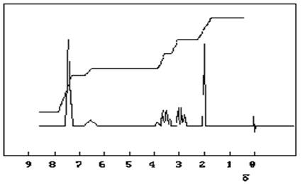
31. 5 分 (4448)
试推断分子式为C10H14, NMR谱图如下的结构式.
32. 5 分 (4449)
试推断分子式为C10H14, NMR谱图如下的结构式.
33. 5 分 (4450)
试推断分子式为C10H14, NMR谱图如下的结构式 .
34. 5 分 (4451)
试推测分子式为C3H8O且具有下列NMR数据的化合物的结构.
��d 质子数 信号类型
1.2 6 二重峰
1.6 1 七重峰
4.0 1 宽的单峰
35. 5 分 (4452)
分子式为C5H11Br有下列NMR谱数据
��d 质子数 信号类型
0.80 6 二重峰
1.02 3 二重峰
2.05 1 多重峰
3.53 1 多重峰
该化合物结构是什么?
36. 5 分 (4453)
试推测分子式为C8H18O在NMR谱中只显示一个尖锐单峰的化合物结构.
37. 5 分 (4454)
化合物(a), (b), (c)分子式均为C3H6Cl2, 它们的NMR数据如下, 试推测(a) (b), (c)的结构.
(a) (b) (c)
�� d : 5.3 1H 三重峰 2.8 2H 五重峰 5.0 1H 多重峰
2.0 2H 多重峰 1.6 4H 三重峰 3.2 2H 二重峰
1.0 3H 三重峰 1.6 3H 二重峰
38. 5 分 (4455)
化合物A,分子式为C5H11Br.NMR: 6H,二重峰, d =0.80, 3H, 二重峰, d =1.02，1H, 多重峰, d =2.05,1H,多重峰; d =3.53. 请写出该化合物结构.
39. 5 分 (4456)
写出分子式为C4H8O2且与下列核磁共振谱相符的化合物结构式.
40. 5 分 (4457)
画出结构式为 的核磁共振谱.
41. 5 分 (4458)
写出分子式为C4H8O2且与下列核磁共振谱相符的化合物结构式.
42. 5 分 (4459)
下列化合物的核磁共振谱中只有一个单峰, 试写出结构式.
(1) C5H12 (2) C2H4Cl2 (3) C8H18
43. 5 分 (4460)
下列化合物的核磁共振谱中只有一个单峰, 试写出结构式.
(1) C2H6O (2) C4H6 (3) C4H8
44. 5 分 (4461)
化合物A, 相对分子质量109, 元素分析: 33.0%C, 4.60%H, 33.0%Cl. 核磁共振: 3H, 二重峰, d=1.73, 1H, 四重峰, d=4.47, 1H, 一重峰, d=11.22。 请写出该化合物结构.
45. 5 分 (4462)
有一未知物经元素分析: C: 68.13%; H: 13.72%; O: 18.15%;测得相对分子质量为 88.15. 与金属钠反应可放出氢气; 与碘和氢氧化钠溶液反应, 可产生碘仿. 该未知物的核磁共振谱在d=0.9处有一个二重峰(6H);��d=1.1处有一个二重峰(3H);��d=1.6处有一个八重峰(1H); d=2.6处有一个单峰(1H);��d=3.5处有一个五重峰(1H). 试推测该未知物的结构.
46. 10 分 (4463)
一个化合物C9H10(A), NMR在��d=2.3(3H), 单峰; d=5(3H), 多重峰; ��d=7(4H), 多重峰. (A)经臭氧化后再用过氧化氢处理, 得到化合物(B), 它的NMR为��d=2.3(3H), 单峰; d=7.2(4H), 多重峰; d=12(1H), 单峰. (B) 经氧化后得到化合物(C), 分子式为C8H6O4, NMR为d=7.4(4H), 多重峰; d=12(2H), 单峰. (C)经五氧化二磷作用后, 得邻苯二甲酸酐. 试写出各化合物的结构.
47. 5 分 (4464)
有三个化合物, 只知它们为C5H10O的异构体, 可能是3-甲基-2-丁酮, 3-甲基丁醛, 2,2-二甲基丙醛, 2-戊酮, 3-戊酮, 戊醛中的三个化合物, 它们的核磁共振谱分别是:
(i) d=1.05处有一个三重峰, 在��d=2.47处有一个四重峰,
(ii) 在d=1.02处有一个二重峰, 在��d=2.13处有一个单峰, 在d=2.22处有一个双峰,
(iii) 只有两个单峰. 试推测此三个化合物的结构.
48. 5 分 (4465)
写出分子式为C4H7NO, 红外在2000cm-1附近有吸收, 核磁共振谱数据如下:
��d 相对强度 信号类型
2.6 2 三重峰
3.6 2 三重峰
3.4 3 一重峰
该化合物的可能结构是什么?
49. 5 分 (4466)
化合物A(C9H10O)不能起碘仿反应, 其红外光谱表明在1690cm-1处有一强吸收峰. 核磁共振谱如下:
��d=1.2(3H), 三重峰;��d=3.0(2H),四重峰;��d=7.7(5H),多重峰 . 试求A的结构?
50. 5 分 (4467)
化合物A(C9H10O)能起碘仿反应, 其红外光谱表明在1705cm-1处有一强吸收峰. 核磁共振谱如下:
��d=2.0(3H),单峰;��d=3.5(2H),单峰; d=7.1(5H),多重峰. 试求A的结构?
51. 10 分 (4468)
根据下列IR及NMR谱推测化合物结构
52. 5 分 (4475)
给出化合物(a)~(f)的结构.
┌NMR:d：2.1 3H 单峰┐
└d：7.5~8.1 4H 四重峰┘
┌IR: 1750cm-1 ┐ ┌ NMR: d=7.9, 4H 单峰┐
└2500~3000cm-1 ┘ └ d=11.4,2H 单峰 ┘
（注: 字母下方括号内的数据为此化合物的波谱数据. 横箭头上方的为加入试剂.）
53. 5 分 (4476)
给出化合物(a)~(f)的正确结构.
1) BrCH2CO2C2H5, Zn MnO2 戊烷 Ph3P=CH2
(a) ───────────→(b)──────→ (c) ─────→ (f)
2) H2O
┌NMR:��d=7.2单峰(5H)┐ ┌IR: 1735cm-1┐ ┌IR: 1730cm-1┐┌IR: 1735cm-1┐
└ d=10.0 单峰(1H) ┘ └ 3350cm-1 ┘ │ 1750cm-1 │└ 1650cm-1┘
└ M+=192 ┙
H3O+ KOH
(c) ─────────→ (d) ───────→ (e)
┌ NMR:��d=7.1单峰(5H)┐ ┌ M+=208 ┐
└ d=2.28单峰(3H) ┘ └lmax=225nm ┘
（注: 字母下方括号内的数据为此化合物的波谱数据. 横箭头上方的为加入试剂.
54. 5 分 (4520)
在核磁共振波谱分析实验中, 调节"相位旋钮"的目的是什么? 怎样才算调节合适?
55. 5 分 (4628)
核磁共振波谱仪, 使用超导磁体提供磁场有何优缺点?
56. 5 分 (4629)
核磁共振波谱仪, 为什么提高磁场强度和降低试样的温度可提高观察NMR信号的 灵敏度?
57. 5 分 (4630)
核磁共振波谱仪, 对质子来说, 提高磁场强度能改变高低能级的质子数之比吗?
58. 5 分 (4631)
某一化合物中质子, 用60MHz电磁辐射照射与用100MHz电磁辐射照射, 其化学位移值δ哪个大?其与TMS之间的频率差哪个大?
59. 2 分 (4632)
核磁共振波谱法中, 什么是化学位移?
60. 2 分 (4633)
核磁共振波谱法中, 什么是耦合常数?它随外加磁场强度变化?怎么变化?
61. 5 分 (4634)
下列环烯中, 能产生核磁共振信号的质子, 各有几种类型?请用a,b,c,d标在下列结构 式上。
62. 2 分 (4635)
核磁共振波谱法中, 什么是磁旋比?它与外加磁场强度有关吗?
63. 5 分 (4636)
核磁共振波谱法中, 什么是屏蔽常数s , 它与哪些因素有关?
64. 5 分 (4637)
核磁共振波谱法中, 什么是影响化学位移的诱导效应?它对化学位移的影响怎么样?
65. 5 分 (4638)
核磁共振波谱法中, 什么是磁各向异性效应?它对化学位移值d的影响怎么样?
66. 5 分 (4639)
NMR法中, 什么是化学等价?什么是磁等价?两者有什么关系?
67. 10 分 (4640)
一个沸点为41OC的烃类, IR特征吸收峰在1640cm-1处, 1H-NMR的d有1.0 (单峰,9H)4.9(多重峰, 2H)和5.7(多重峰, 1H)。试推测该化合物的结构。
68. 10 分 (4641)
某一烃类化合物,质谱的分子离子峰m/e=102, 其1H-NMR谱在d=7.4(单峰, 5H)和 3.1(单峰,1H), 以及IR吸收峰在2210cm-1和3310cm-1, 试推导该化合物的结构。
69. 10 分 (4642)
某分子式为C5H7NO2的化合物, 它的IR和1H-NMR谱图如下,试推导其结构。
70. 10 分 (4643)
某未知试样经元素分析知:其中不含氮, 硫和卤素, 相对分子质量为105+2, 它的UV, IR 和1H-NMR谱如下, 试确定其结构。
71. 5 分 (4644)
只有一组1H-NMR谱图信号和特定分子式的下列化合物, 可能的结构是什么?
(1) C2H6O (2) C3H6Cl2 (3) C3H6O
72. 5 分 (4645)
分子式为C4H7Br3的化合物在1H-NMR 图上在d=2.0与3.9处, 有两个单峰其峰面积之 比为3:4, 请写出结构式。
73. 5 分 (4646)
一个卤代烃, 分子式为C5H10Br2,测得1H-NMR谱图如下:
(1) 有三种类型质子
(2) 化学位移 峰裂分
a:δ=1.3 多重峰
b:δ=1.85 多重峰
c:δ=3.35 三重峰
(3) 峰面积之比 a:b:c=1:2:2
请写它的结构式, 并进行分析。
74. 5 分 (4647)
试预测丁二酸二乙酯 CH3-CH2-OCO-CH2-CH2-COO-CH2CH3 的1H-NMR谱图, 请写出各峰的化学位移大小(或高,低场), 裂分图与峰面积(相对强度) 之比。
75. 5 分 (4648)
化合物(a),(b),(c)分子式都是C5H10Br2, 它们的1H-NMR谱数据如下, 试推测(a),(b),(c) 的结构
(a) (b) (c)
d1.0, 6H, 单峰 1.0,6H, 三重峰 0.9,6H, 二重峰
3.4, 4H, 单峰 2.4,4H, 四重峰 1.5,1H, 多重峰
1.85,2H, 多重峰
5.3,1H, 三重峰
76. 5 分 (4649)
核磁共振波谱法中, 什么是进动频率(或称Larmor频率)? 它与外磁场强度有关吗? 它有什么特点?
77. 5 分 (4650)
核磁共振波谱法中, 自旋核1H,31P,13C,19F,它们的自旋量子数I=1/2, 在外磁场作用下 产生能级分裂,能产生几个能级?用什么表示?它们的相邻两能级能量之差能相等吗?
78. 2 分 (4651)
核磁共振波谱法中, 什么是屏蔽作用?
79. 10 分 (4652)
两个异构体A和B, 分子式皆为C8H10O,
它们的IR和1H-NMR的谱图如下所示, 试推测其结构。
80. 10 分 (4653)
一个高沸点的有机卤化物Ms显示分子离子峰在 m/e=154和156, 其相对丰度为3:1, IR特征吸收在1695cm-1,1H-NMR如图所示, 试推断其结构。
81. 10 分 (4654)
化合物分子式为C9H10O, 其IR和1H-NMR谱图如下, 试推测其结构。
82. 10 分 (4655)
某沸点为82OC的液体, 相对分子质量为60, IR在3300cm-1强宽峰, 1H-NMR: d 1.1(双峰, 6H), 3.9(七重峰, 1H)和4.8(单峰, 1H) 试推测其结构。
83. 10 分 (4656)
某液体化合物, 分子式为C5H7NO2, IR特征吸收峰位置在2240cm-1和1730cm-1 , 1H-NMR谱d=2.7(单峰, 4H)和3.8(单峰, 3H), 试推测此化合物的结构并解释d=2.7处4H单峰是什么基团形成的。
84. 10 分 (4657)
一个有鱼腥味的液体, 元素分析:ω(C)=68.93%,ω(H)=15.04%和ω(N)=16.08%, IR在3300cm-1存在弱双峰, 1H-NMR 显示: d=0.8(单峰, 9H), 1.1(单峰, 2H)和2.3(单峰, 2H), 试推断其可能的结构。
85. 5 分 (4658)
两个非对映体(A)和(B), 所具有的普通结构如下:
( “”指此键空间关系不定)
化合物(A)对环上亚甲基给出单峰, 而化合物(B)则给出多重峰, 画出这两个异构体的
三度空间结构, 并解释差异的原因。
86. 5 分 (4659)
一个烃类分子式为C9H10, 其1H-NMR谱图如下所示, 试推导其结构。
87. 5 分 (4660)
一个沸点为72OC的碘代烷, 它的1H-NMR谱: d=1.8(三重峰, 3H)和3.2(四重峰, 2H)试 推测其结构并加以说明。
88. 5 分 (4661)
在HF的质子共振谱中, 得到两个强度相等的峰, 解释原因, 并说明在高场和低场的峰各是如何产生的。